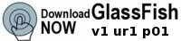

GlassFish 社群正在建立免費、開放原始碼且高品質的企業軟體。最主要的成果是應用程式伺服器、Java EE 5 參照實作以及 Java Persistence API 參照實作 TopLink Essentials。此外，社群還提供 Maven 儲存庫、工具等等。

|

|

|

|
| 入門 | 下載 | 通訊 | 貢獻 |
SailFin 專案、GlassFish 的開放原始碼 SIP Servlet 技術
SIP (Session Initiation Protocol，通訊啟動協定) 正應用於許多當前極為常用的服務，如 IP 電話服務、即時傳訊、身份認證和好友清單管理，以及 Web 會議。SailFin 專案將 SIP Servlet 技術增加至 GlassFish 應用程式伺服器。如需更多資訊，請造訪 https://sailfin.dev.java.net。
|  |
| |
| |